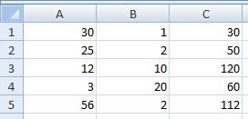

Répéter les mêmes actions - Les boucles
Exercices
Exercice 1
Ecrire une procédure qui permet de calculer les éléments de détail d’une facture. Les prix sont indiqués en colonne A et les quantités en colonne B. La procédure écrit les résultats dans la colonne C tant que les valeurs de prix (A) et de quantité (B) sont connues : les cellules ne sont pas vides et la valeur des cellules est numérique.

Pour vérifier si la cellule est vide, vous pourrez utiliser la méthode VBA IsEmpty. L'instruction If Not IsEmpty(Range("A" & i)) Then exécute les instructions du if si la cellule Ai n'est pas vide.
Pour vérifier si la valeur d'une cellule est numérique, vous pourrez utiliser la méthode VBA suivante : IsNumeric(Range("A" & i)). Cette méthode envoie True si la valeur de la cellule Ai est numérique.
Hide
Sub detail()
Dim i As Integer
i = 1
Do While ((Not IsEmpty(Range("A" & i))) And (Not IsEmpty(Range("B" & i)))) And (IsNumeric(Range("A" & i)) And IsNumeric(Range("B" & i)))
Range("C" & i).Value = Range("A" & i) * Range("B" & i)
i = i + 1
Loop
End Sub
Les conditions du While vérifient si les valeurs des cellules Ai et Bi existent et si elles sont numériques. Tant que les conditions sont vérifiées, on effectue le calcul et on passe à la ligne suivante.
Hide
Exercice 2
Ecrire la fonction compte_lignes qui permet de compter le nombre de lignes de la plage de cellules MaPlage passée en argument et la tester dans Excel.
Votre solution ne devra pas utiliser la méthode Count de l’objet Range.
Vous pourrez utiliser la boucle For Each...Next pour parcourir les lignes de la plage de cellules MaPlage. Pour ce faire, vous pourrez utiliser la propriété VBA Rows : For Each ligne In MaPlage.Rows permet de parcourir chaque ligne de la plage de cellules MaPlage.
Hide
Function compte_ligne(MaPlage As Range) As Integer
Dim cellule As Range
compte_ligne = 0
For Each ligne In MaPlage.rows
compte_ligne = compte_ligne + 1
Next ligne
End Function
Hide
Exercice 3
Ecrire une procédure, qui pour la plage de cellules active, écrit « pleine » dans toutes les cellules vides et efface le contenu de toutes les cellules pleines.
Vous pourrez utiliser la boucle For Each...Next pour parcourir les cellules et la méthode IsEmpty pour vérifier si une cellule est vide ou non.
Hide
Sub pleine_vide()
For Each cellule In Selection
If IsEmpty(cellule) Then
cellule.Value = "pleine"
Else
cellule.Value = ""
End If
Next cellule
End Sub
Hide
Exercice 4
Que fait la boucle suivante, sachant que la fonction LCase convertit tous les caractères en minuscules ?
Do
rep = InputBox("Voulez-vous continuer ? (O/N)")
Loop Until LCase(rep) = "n"
La réécrire avec l’instruction Do...Loop While
La boucle Do...Loop While se traduit littéralement par "Faire... Tant que" alors que la boucle Do...Loop Until se traduit littéralement par "Faire... Jusqu'à".
Hide
Do
rep = InputBox("Voulez-vous continuer ? (O/N)")
Loop Until LCase(rep) = "o"
Pour passer d'une boucle Do...Loop Until à une boucle Do...Loop While, il suffit de donner la condition contraire.
Hide
Exercice 5
Ecrire une procédure qui permet de calculer la surface d’un rectangle tant que les valeurs de sa hauteur et de sa largeur situé dans les colonnes A et B sont connues (les cellules ne sont pas vides).
Vous pourrez utiliser l’instruction Range("A" & i) pour parcourir les i lignes de la colonne A.
La méthode est la même que pour l'exercice 1.
Hide
Sub surfRect()
Dim i As Integer
i = 1
Do While ((Not IsEmpty(Range("A" & i))) And (Not IsEmpty(Range("B" & i))))
Range("C" & i).Value = Range("A" & i) * Range("B" & i)
i = i + 1
Loop
End Sub
Hide
Félicitations, vous avez terminé les exercices de ce chapitre.
Vous pouvez passer au chapitre suivant en cliquant sur
ce lien ou sur la flèche droite en dessous. Vous pouvez également retourner sur le chapitre en cours en cliquant sur la flèche gauche.